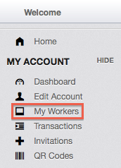
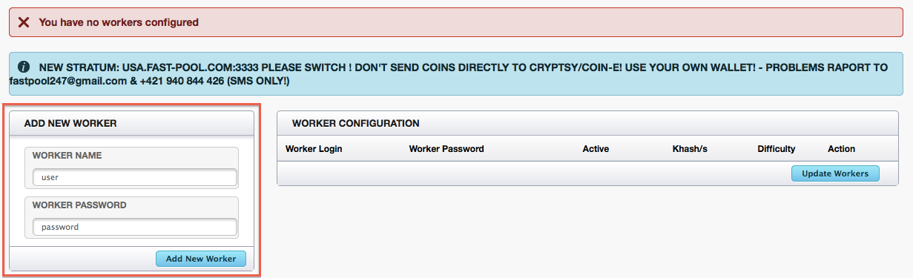
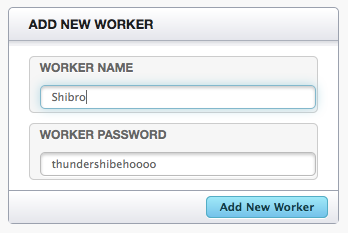
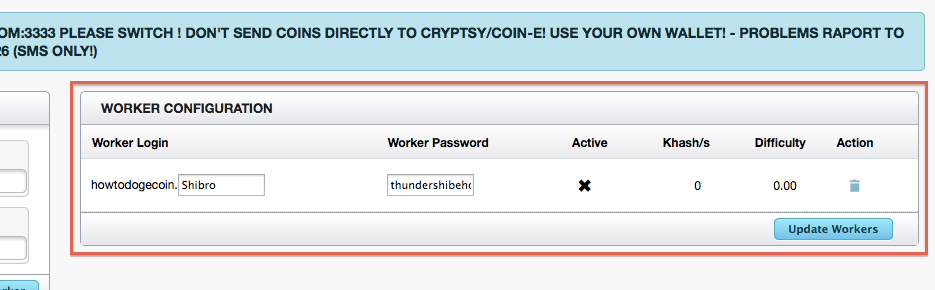
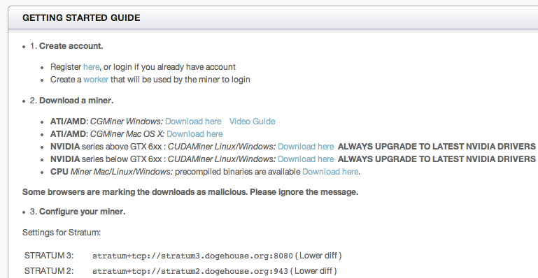
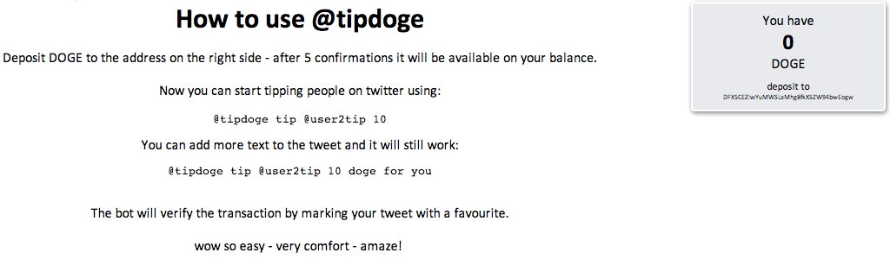
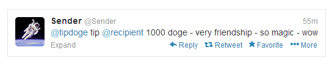
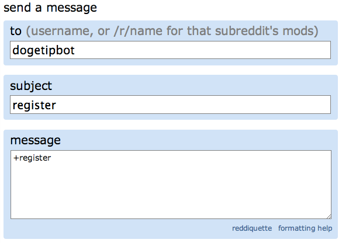
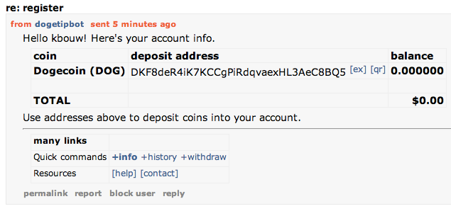

The creators of this guide are two newbie shibes. We just started getting Dogecoin Jan 14 and had to learn a lot from many different sources. This is the knowledge we gained compiled in one place, designed for people who know nothing about Dogecoin other than YES IT IS REAL.
This guide was last updated Jan 22, 2014.
Dogecoin is a cryptocurrency, basically digital monies. As described by the Guardian, it is "based on a combination of Bitcoin, the popular digital money, and Doge, the internet meme that superimposes broken English written in Comic Sans onto pictures of Shiba Inu dogs." While the doge meme is silly, Dogecoin is built on the same technologies as Bitcoin and Litecoin and is just as legitimate. Don't be fooled by the comic sans.
We've been following cryptocurrencies for a while but Doge is the one that made us jump in. Why? Community and accessibility.
The community is very fun and positive. Not very Wall Street. Anyone is welcome, even new shibes (Shiba Inus) like you. There are also many community efforts, such as the recent $30k worth of Doge donation to the Jamaican Olympic bobsled team. To meet fellow shibes, check out reddit.com/r/dogecoin.
It is easy to acquire Doge via tips, faucets, mining, and converting other currencies via exchanges.
Mining just requires free software and normal computers, so it is still possible for average shibes like you and me! While 1 Bitcoin is worth ~$800 USD at the time of writing, it is impossible / extremely unprofitable to mine without specialized hardware that is designed specifically for mining Bitcoin. In contrast, there isn't any hardware designed specifically to mine Doge to compete against! Payouts for cryptocurrencies are also reduced over time as part of their design, so it is hard to mine a currency that has been out for years. Doge was released in December 2013 so it is still young.
An alternate guide for a local wallet and faucets can be found at howtodoge.com. We did not realize we had picked a such similar domain and are very sorry shibes.
Anyways, your wallet is where you keep all your Dogecoins. In our guide, you will use a local wallet. This means all the coins are stored in a file on your computer, so if your computer spontaneously explodes, you will lose your coins! However you can and should make backups. An alternative is an online wallet service, but this requires trust because they could turn out to be bad shibes and run off with your coins! Note: you can have multiple wallets like having multiple bank accounts. For example, store some in an online wallet for convenience and the rest in a secure and backed up local wallet.
First go to the official site and grab the appropriate wallet for your operating system. "Browser" is for an online wallet, which we will not cover at this time. The download section looks like this:

When you first run the program it takes a while to sync. This is because all transactions are saved in something called a block chain. Your wallet must basically downloads the entire transaction history so give it some time.
Now you have a wallet and can start receiving coins! When you select "much receive" you will have a single address. To receive doge, just have people send to this address. Since it is difficult to type, you can just copy paste either by right clicking the address to copy or by selecting the address then clicking "copy address" at the bottom. Windows and OSX have the same layout.

Note: if you were introduced to Doge via a tip, we cover how to collect it with your address in the tipping section.
If you want to track your sources of coins, you can create new addresses and give them labels. For example, I can create and give out a new address to receive doge specifically from this guide, which will distinguish them in the history. All these addresses go to the same wallet though.
Note: it is safe to give this receive address to people you don't know, it is a one way street! Bad shibes cannot pull doge out from it.
There is also a "Pls send" button used for sending doge to addresses you know. Just fill out the fields and send!
Ready to get your first doge? There are sites out there known as faucets / water bowls which give you free doge. Faucets are great for poor and new shibes in need of some starter doge or don't have an adequate computer to mine them. These water bowls are filled by rich and generous shibes, so remember to give back when you are an established shibe! If they run out, they are out until some shibe refills them.
To receive your free Dogecoin payout, all you have to do is enter your receive address on the faucet site to receive the payment. Much generous! Note: most sites have captchas to ensure you are a fur-real. Also, payouts won't immediately show up. They are added to the block chain, verified, then you must sync up to that point.
Below are lists of faucets maintained by other shibes (not us).
To be written. Much patience, thanks!
To be written. Much patience, thanks!
Wallets are software and get important updates over time. We'll write up how to safely upgrade soon!
To mine Doge (or any other cryptocurrency), you basically have your computer do hard math and are rewarded with coins. A more detailed explanation of what is going on can be found here. You will have upfront hardware costs and electricity costs but the mining process is free.
We are just using gaming comps we already owned, but some people go out of their way to build mining rigs. In terms of hardware efficiency, AMD graphic cards are better than Nvidia graphic cards, and both are much better than CPU mining. We do not recommend using laptops as a lot of heat is generated and laptops are very closed systems.
While we don’t have any experience in mining rig building, this is a guide we found on example mining builds. The general goal is to get multiple powerful AMD graphic cards with bare-bones everything else (to reduce electricity costs).Here is a comparison of specific card performance (may be out of date). Thanks to the mining craze, you will have to pay top dollar for the popular cards (if you can find them in stock).
There is also the option of mining using virtual servers (such as Amazon EC2), which have no hardware cost but bill by usage. However they are more difficult to set up and we do not think these are cost effective anymore (better to just buy Doge outright). Here is a guide we found if you want to go this route anyways.
WARNING: before mining with your own hardware, you must understand that the computations will cause your hardware to work hard, causing their temperatures to increase a lot. It is important that the fan speed is also increased to keep them at a target temperature. Cgminer can control the fan in most cases, otherwise software like Catalyst control center can be used (it varies from card to card. Sometimes even CCC will not have the required functionality).
What is a good temperature? We like to keep our cards at ~70 degrees Celsius and below, although some people are comfortable with going to 80 degrees Celcius. The fans will be very loud, so you have to also balance annoyance with mining power. Higher temps = more risk of permanent damage. Cgminer will have a temperature reading and other software, such as Catalyst control center or gpu-z, will as well.
The most popular software for mining is cgminer, cudaminer, and guiminer. Download links are below.
Note:
-cudaminer is for Nvidia cards ONLY, and if you have a Nvidia card this is what I recommend (most effective).
-I believe cgminer and guiminer can be used with AMD, Nvidia, and CPU mining.
-guiminer (gui = graphical user interface) is probably the easiest to use but cgminer is way more efficient for AMD cards.
-do NOT download the latest version of cgminer (3.10). The latest versions removed support for graphic cards and are only for ASIC hardware. The latest version you can get for Dogecoin mining is 3.7.2.
Note: for our guide, we use cgminer with an AMD card in Windows. We hope to eventually write guides for other miners / operating systems.
Mining rewards are random. You are basically searching for blocks, then solving and confirming the block for the block payout (currently the payout is up to 1,000,000 coins per block, but on Feb 14th this will be halved to 500,000 coins per block). Now the first to find and confirm the block gets all the payout of that block and everyone else has to move on. Stronger hardware = faster searching and confirming.
From an overall long term view, if you are 0.001% of the computing power overall you should be able to get ~0.001% of the payout overall (less likely to find and confirm blocks, but get 100% of the block payout when it happens). But this is a theoretical long term view, and smart shibes will team up with other shibes then split the rewards (more likely to find and confirm blocks, but split the block payout amongst the team). It is better to get consistent and frequent payouts so team up. To team up with other shibes you have two options, 1. join a pool or 2. join a p2pool.
We went with option 1 although we have heard good things about option 2. However I have heard if your hash rate is low, joining a p2pool is not worth it but I have not personally verified this.
Once you have a pool, login to their web page. You need to create a worker for each graphics card / cpu you have mining. Log into the pool account you created and select "my workers” on the left, which is usually under “my account”.
On your worker dashboard, there will be an option to create a new worker.
Give the worker a user name and password
Once you've added your new worker, you should see it added to your list. Repeat for as many graphic cards / cpus you plan to have mining and note the usernames and passwords. You can always come back to this page if your forget.
Now go to "Getting Started", which is usually under "Home" or "Help". All the pools we've joined will have at least one stratum with a corresponding port number. Note these.
As we mentioned, we will be going through this process with cgminer 3.7.2 on Windows with AMD cards as that is what we own.
First, ensure you have the latest drivers for your graphics card by downloading them here. If you need help determining what graphics card you have, go to your device manager (control panel > hardware and sound > device manager) and look under "display adapters".
INSERT SCREENSHOTAfter you have installed that, grab the AMD sdk.
Once the SDK is installed, extract your downloaded cgminer file to a location you can remember. Next, open up notepad and paste the following, replacing your-pools-stratum, port-number, web-login, worker-name, and worker-password with your information:
setx GPU_MAX_ALLOC_PERCENT 100
cgminer --scrypt -I 10 --temp-target 70 --gpu-fan 10-70 -o stratum+tcp://your-pools-stratum:port-number -u web-login.worker-name -p worker-password
It is basically saying use 100% of your gpu, scrypt mode (gpu mining), intensity of 10 (max 20, but I recommend you test the waters before tweaking this), target temperature of 70, gpu fan speed at 10-70%, then the stratum connection and worker information. Be sure to watch the temperature even with the fan settings, some cards do not respond to these commands.
Overclock.net forums describes other useful gpu settings, such as "--temp-cutoff 85" (max temperature until cgminer stops) and is worth a read.
Now go to save as, navigate to your cgminer folder, and select the all files dropdown (this lets you save it as a *.bat file instead of a *.txt). Then save it as "whatevernameyouwant.bat". This makes a Windows batch file which runs cgminer.exe with the provided commands. You can close notepad.
INSERT IMAGE
Now run the batch file you created and it should work if it is in the cgminer-3.7.2-windows folder (assuming the default folder name). It may complain about unsafeness or require permission to go through the firewall, but this is ok. Run it anyways and let it through!
This is an example of a successful screen. Note the GPU temp, hash rate (number next to Kh/s), and HW value. Temperature indicates how hot your card is getting, hash rate is its performance, and HW is hardware errors. We want HW to be 0, so reduce the intensity (ex: -I 9 <- that is a capital i) if it gets too hot or has any HW errors.
INSERT IMAGE
To quit, hit Q or Ctrl + C.
If the *.bat fan control commands do not work, AMD's catalyst control center may have an OverDrive option which lets you manually set fan speed.
INSERT IMAGEPools often provide multiple stratums and you can also join multiple pools. You will want to configure the cgminer so that it switches if the current stratum fails with --failover-only followed by -o and the alternative stratum information. For example:
cgminer --scrypt -I 13 --no-submit-stale -o stratum+tcp://stratum.rapidhash.net:3333 -u Weblogin.Worker -p Worker-password --failover-only -o stratum+tcp://stratum2.rapidhash.net:3333 -u Weblogin.Worker -p Worker-password
Further tweaking, such as overclocking, is beyond the scope of this guide but http://www.reddit.com/r/dogemining has some guides on the sidebar. If you are curious, this is what I use with a Radeon HD 6970 to get ~500Kh/s at ~70 deg C:
cgminer -I 18 -w 256 --temp-cutoff 90 --temp-overheat 80 --temp-target 75 --gpu-fan 10-85 --no-submit-stale -o stratum+tcp://some-pool.com:1234 -u howtodogecoin.worker1 -p workwork1 --failover-only -o stratum+tcp://stratum.some-other-pool.net:4321 -u howtodogecoin.worker2 -p workwork2
Once you have mined some coins, login to your pool's web interface and go to "edit account", usually under "my account". Give it an address to send coins, then configure automatic payouts. You can also manually request payouts on the right.
So you are happily mining Doge, now what? You can look at both your individual and pool's progress via the pool's web interface. We will add a summary of the dashboard information soon.
Tipping is possible on Twitter and Reddit (and possibly other places, but this is what we have experience with). Tipping brings much joy and is an essential part of the community. It is also important because it introduces people to the wonders of Dogecoin and keeps doge in circulation.
Visit this link and log in with your twitter credentials.
After authenticating your account, you'll receive a series of instructions for depositing Dogecoin to begin tipping. Below is a screen shot of what you should see.
Below is an example of how to use the tip bot once you have a positive balance:
TODO: withdrawal, other commands
Note: the amount received by the bot will have a 1 Doge reduction because a Doge transfer consumes 1 Doge. For example, if you gave a tip of 50, the recipient will receive 49.
+register with the dogetipbot by sending the linked message. (note: you should receive your confirmation almost instantly but during high volume periods of traffic, it may take longer). A further explanation of its recent slowness is found here.
Your registration confirmation will include your deposit address and balance. Just send doge to that address. If for any reason you forget your deposit address or tipbot balance, just message +info to dogetipbot.
Once you have sent coins to your tip bot balance, you can tip fellow redditors by including something like "+/u/dogetipbot 100 doge - heres some doge!" in your comments and replies. If you want the tip bot to reply as well, make sure to include "verify", like "+/u/dogetipbot 100 doge verify"
Some other useful dogetipbot commands: